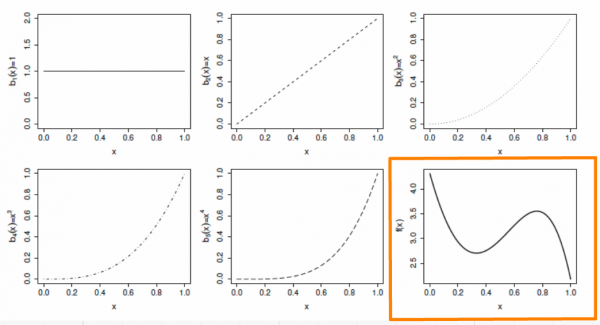
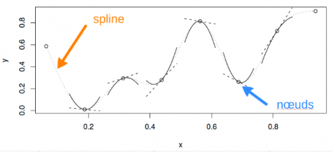
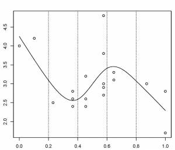
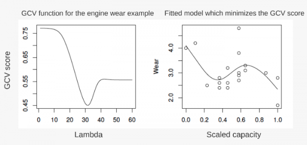

Chapitre 10 Les GAMs en coulisse
Nous allons maintenant prendre quelques minutes pour regarder comment fonctionnent les GAMs. Commençons en considérant d’abord un modèle qui contient une fonction lisse d’une covariable, , xi :
\[y_i = f(x_i) + ε_i\]
Pour estimer la fonction f, nous avons besoin de représenter l’équation ci-dessus de manière à ce qu’elle devienne un modèle linéaire. Cela peut être fait en choisissant une base, bi(x), définissant l’espace des fonctions dont f est un élément:
\[f(x) = \sum_{i=1}^{q}b_i(x)β_i\]
10.1 Un exemple simple : une base polynomiale
Supposons que f est considéré comme un polynôme d’ordre 4, de sorte que l’espace des polynômes d’ordre 4 et moins contiennent f. Une base de cet espace serait alors :
\[b_1(x)=1, b_2(x)=x, b_3(x)=x^2, b_4(x)=x^3, b_5(x)=x^4\]
et f(x) devient :
\[f(x) = β_1 + x_iβ_2 + x^2_iβ_3 + x^3_iβ_4(x) + x^4_iβ_5\]
et le modèle complet devient :
\[y_i = β_1 + x_iβ_2 + x^2_iβ_3 + x^3_iβ_4(x) + x^4_iβ_5 + ε_i\]
Chaque fonction de base est multipliée par un paramètre à valeur réelle, βi, et est ensuite additionnée pour donner la courbe finale f(x).

En faisant varier le coefficient βi, on peut faire varier la forme de f(x) pour produire une fonction polynomiale d’ordre 4 ou moins.
10.2 Un autre exemple : une base de spline cubique
Un spline cubique est une courbe construite à partir de sections d’un polynôme cubique reliées entre elles de sorte qu’elles sont continues en valeur. Chaque section du spline a des coefficients différents.

Voici une représentation d’une fonction lisse utilisant une base de régression spline cubique de rang 5 avec des nœuds situés à incréments de 0,2:

Dans cet exemple, les nœuds sont espacés uniformément à travers la gamme des valeurs observées de x. Le choix du degré de finesse du modèle est pré-déterminé par le nombre de noeuds, qui était arbitraire. Y a-t-il une meilleure façon de sélectionner les emplacements des nœuds?
10.2.1 Contrôler le degré de lissage avec des splines de régression pénalisés
Au lieu de contrôler le lissage (non linéarité) en modifiant le nombre de nœuds, nous gardons celle-ci fixée à une taille un peu plus grande que raisonnablement nécessaire et on contrôle le lissage du modèle en ajoutant une pénalité sur le niveau de courbure.
Donc, plutôt que d’ajuster le modèle en minimisant (comme avec la méthode des moindres carrés) :
\[||y - XB||^2\]
il peut être modélisé en minimisant :
\[||y - XB||^2 + \lambda \int_0^1 [f''(x)]^2 dx\]
Quant λ tend vers ∞, le modèle devient linéaire. Pour la sélection du meilleur paramètre de lissage, λ, on utilise une approche de validation croisée. Si λ est trop élevé, les données seront trop lissées et si elle est trop faible, les données ne seront pas assez lissées. Idéalement, il serait bon de choisir une valeur λ de sorte que le f prédit est aussi proche que possible du f observé. Un critère approprié pourrait être de choisir λ pour minimiser :
\[M = \frac{1}{n} \sum_{i=1}^{n}(\hat{f_i} - f_i)^2\]
Étant donné que f est inconnu, M est estimé en utilisant une technique de validation croisée généralisée qui laisse de côté, à chaque tour, une donnée et estime la capacité moyenne des modèles, construits sur les données restantes, de prédire la donnée qui a été mise de côté (pour plus de détails, consultez Wood 2006).
10.3 Illustration du principe de validation croisée
Dans le premier panneau, la courbe correspond à un ajustement faible par rapport aux données et ne fait pas mieux avec le point manquant. Dans le troisième panneau, la courbe ajuste le bruit aussi bien que le signal et la variabilité supplémentaire induite l’amène à prédire la donnée manquante plutôt mal. Dans le deuxième panneau, cependant, nous voyons que l’ajustement de la courbe du signal sous-jacent est très bien, le lissage passe à travers le bruit et la donnée manquante est raisonnablement bien prédite.

10.4 Note supplémentaire sur les degrés de liberté effectifs (edf)
Combien de degrés de liberté a un GAM ?
Au lieu de fournir la sortie de la validation croisée en termes de
λ (un paramètre qui détermine la complexité de
l’ajustement), la fonction gam() utilise un terme appelé les degrés
de liberté effectifs (edf), de manière cohérente à quantifier la
complexité du modèle (pour justifier notre intuition que les degrés de
liberté offrent une manière cohérente de quantifier la complexité du
modèle). Parce que le nombre de paramètres libres des splines de lissage
(tel que les GAMs) est souvent difficile à définir, les edf sont liés à
λ, où l’effet de la pénalité est de réduire les degrés
de libertés. Donc, si le nombre de noeuds est arbitrairement réglé à k =
10, k-1 définit la limite supérieure des degrés de libertés associés à
un terme de lissage. Ce nombre diminue alors que la pénalité lambda
augmente jusqu’à ce que le meilleur modèle soit trouvé par validation
croisée.